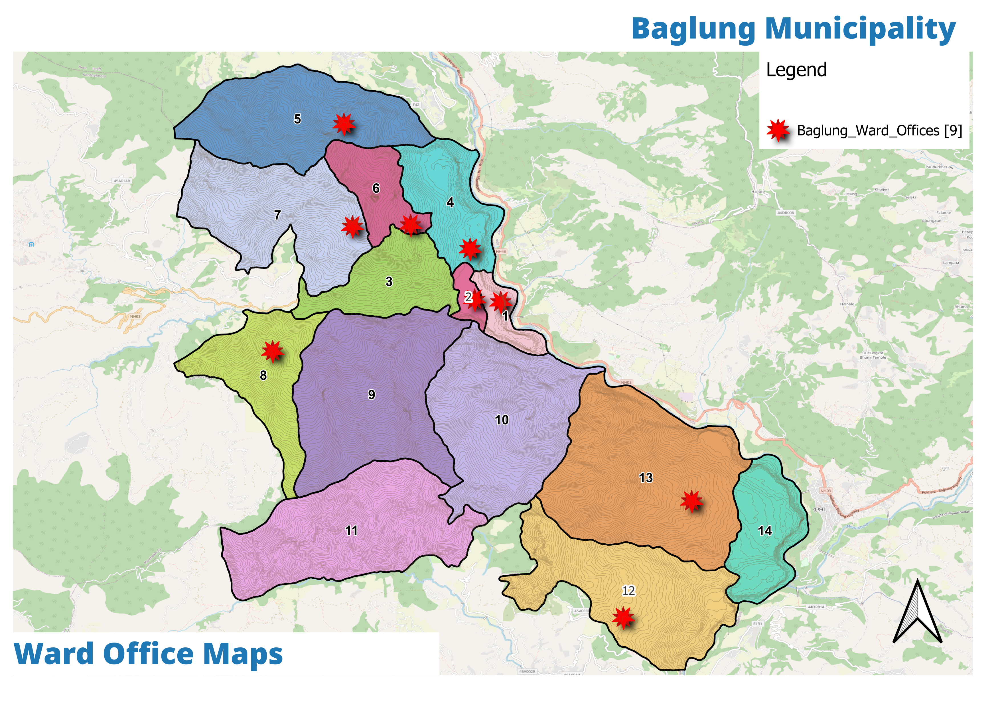
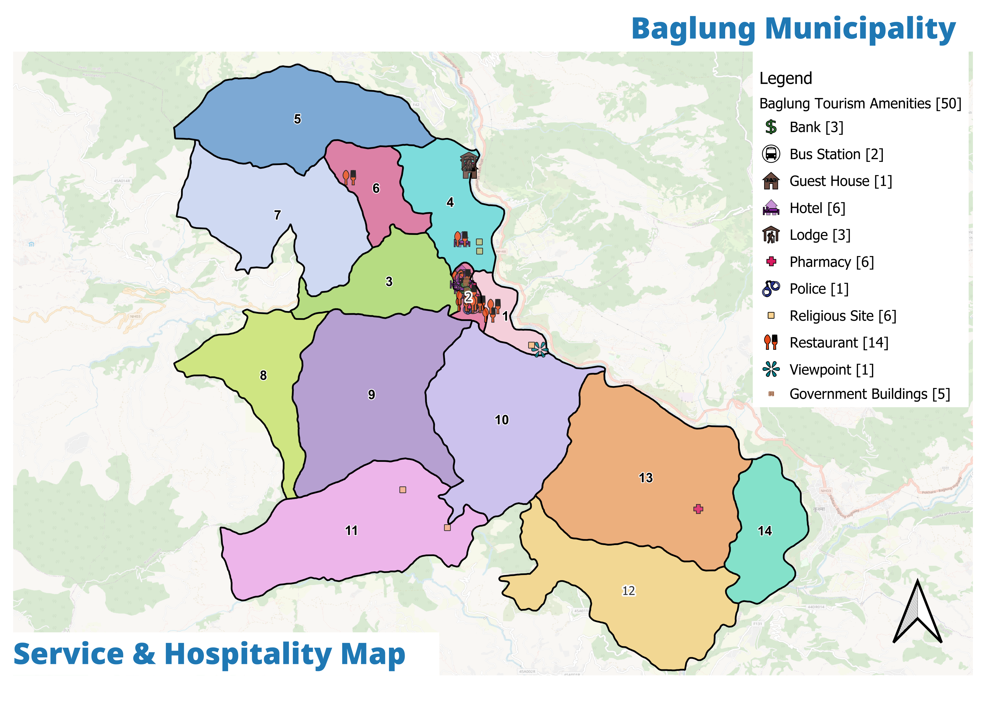

Existing situation

The 14 ward offices Baglung already maintains — the institutional asset the App and call centre extend.
Service counters spatially mapped — the outreach network for the citizen-facing systems.
The services footprint demand-side — delivery points the institutional plan must reach.
A modern procedural stack on a thin human floor
Baglung runs 72 laws and a PAPERLESS system, is sistered with Windham, and has ward offices in all 14 wards. The constraint is not process — it is depth: 42 staff and a technical gap in precisely the GIS/planning skills that run this plan.
Ward office map

Ward offices (spatial)

Civic services
Baseline. 42 staff (29 male / 13 female); all 14 ward chairs male; 72 laws; PAPERLESS system live; Windham sister-city relationship.